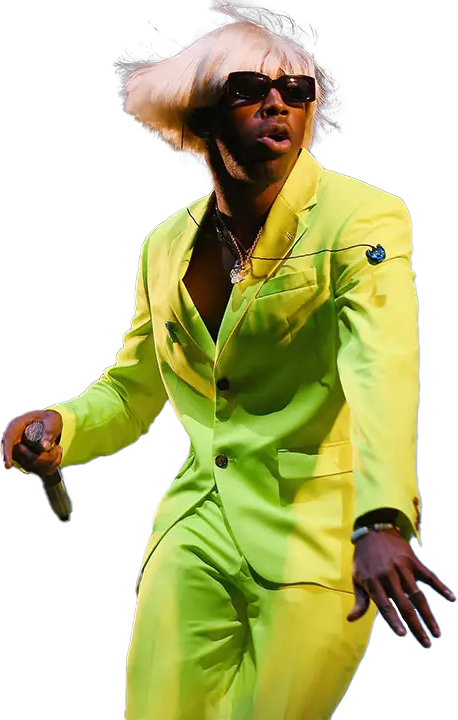
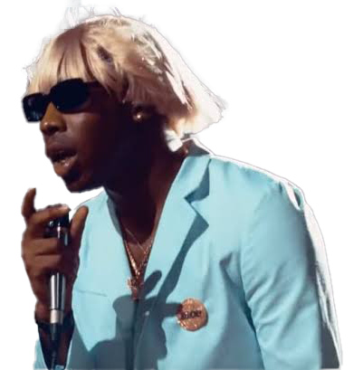

About
미국의 래퍼, 프로듀서, 패션 디자이너, 뮤직 비디오 감독.
Rapper & Producer & Designer
Tyler, The Creator
- Name: Tyler Gregory Okonma
- Birthday: 1 March 1991
- Age: 32
- Height: 187cm
- City: California, USA
- Label: Columbia, Odd Future, Sony, RED, XL
- Crew: Odd Future
- Website: https://golfwang.com/
LA를 기반으로 두고 활동하고 있는 크루 "Odd Future"의 수장이다. 근 몇년 간 가장 빨리 성장한 아티스트 중 한 명으로 평가된다. 탄탄한 기본기를 바탕으로 그만의 차별화된 음악을 내세워 단숨에 오리지널리티를 얻었다. 단지 음악뿐만 아니라 패션브랜드 Odd Future, Golf Wang을 성공적으로 런칭하였고 영상쪽으로도 개성 강한 예술성을 발휘하고 있다. 채도가 높은 패션, 배경을 거침없이 사용하고 낮을 배경으로 하는 경우가 많을 뿐만 아니라 분위기가 예측불가능하게 바뀌는 음악과 뮤직비디오로도 유명하다. 말 그대로 Creator 답게 이름값을 하며 다양한 분야에서 다양한 형태로 그의 재능을 펼치는 아티스트.
Facts
디스코그래피 & 개인 수상 이력
LP
EP & Mixtape
Grammy Awards
MTV Awards
Genres
IGOR는 하나의 장르로 분류하기 어려울 정도로 팝, 힙합, R&B, Funk, 그리고 재즈까지 여러 장르와 사운드를 빌려오곤 한다.
실제로 타일러 더 크리에이터 본인은 2020 그래미 어워즈 시상 소감에서 자신의 앨범이 단순하게 "랩"으로 규정된 것에 불만을 표하곤 했다.
Songs
이 앨범은 2017년 자신이 쓴 곡 "EARFQUAKE"이 저스틴 비버와 리아나로부터 거절받은 이후 자신의 앨범에 수록하면서부터 시작되었다고 한다.
이 앨범은 타일러 자신이 보고 있는 전 남자 애인과 그 남자 애인의 전 여자친구에 대한 삼각관계에 대해 다루고 있다고 한다.
IGOR라는 음반명은 영 프랑켄슈타인에 나오는 곱추 캐릭터 이고르에서 따왔다고 하며, 사랑에 대한 타일러 자신의 어둡고 무기력한 면을 가장 잘 나타낼 수 있을 만한 캐릭터라 판단하여 따왔다고 한다.
단, 앨범의 타이틀은 이고르가 아닌 이고어로 발음한다.
1. IGOR'S THEME
3:21
Intro
Annotations
타일러의 옛 음반들과 유사하게, 'IGOR'는 타일러의 경험과 생각을 전달하는 하나의 페르소나이다. 하지만 IGOR는 단지 타일러의 새로운 네러티브를 전달하기만 하는 캐릭터만이 아니다. 그것은 타일러 더 크리에이터가 프로듀서로서 새로운 사운드들을 실험하게 도와주는 매개체이기도 하다. 앨범을 열어주는 인트로 "IGOR'S THEME"은 24초 동안 지속되는 하나의 긴 신디사이저 음으로 시작을 한다. 이는 앞으로 앨범에서 펼쳐질 사운드스케이프를 엿듣게 해주는 역할을 지니고 있다.
Written By
- Tyler Okonma
- Symere Woods
2. EARFQUAKE
3:10
Title Track
Annotations
"EARFQUAKE"은 IGOR를 작곡하게 된 뿌리와도 같은 곡이며, 동시에 앨범의 네러티브에서도 중요한 시작점이기도 하다. EARFQUAKE는 타일러 더 크리에이터와 플레이보이 카티 합작 곡이다. 이 곡에서 타일러는 그가 의지하고, 동시에 필요로 하는 그의 애인에 대해 이야기한다. 하지만 타일러는 그의 애인과의 관계에서 최선을 다하지 못햇다는 사실을 인지하고 있다. 이 곡에서는 아름다운 피아노와 신디사이저, 깊은 베이스와 일그러진 드럼 사운드들, 그리고 타일러의 이전 앨범인 "Cherry Bomb"과 "Flower Boy"에서도 들을 수 있는 특유의 믹싱 스타일을 들을 수 있다.
Written By
- Tyler Okonma
- Jordan Carter
3. I THINK
3:32
Annotations
두 번째 트랙 EARFQUAKE 이후, 앨범은 세 번째 트랙인 "I THINK"로 부드럽게 흘러간다. I THINK는 타일러의 로맨틱한 관계에서의 정신 상태와 그가 느끼는 감정들에 대해 의문을 제기한다. 타일러는 그의 파트너의 행동과 그것이 타일러에게 미치는 영향 때문에 이러한 관계를 지속할 것인지 고민한다. 하지만 그의 이러한 궁금증은 점점 더 커지며 이러한 인연에 더욱 집착한다. 이로 인해 그는 사랑을 믿게 된다. I THINK는 이전 트랙과 앨범 전반에 걸쳐 펼쳐지는 사랑의 관한 주제를 발전시킨다.
Written By
- Tyler Okonma
- Bibi Mascel
- Bodionio Nkono Telesphore

4. EXACTLY WHAT YOU RUN FROM YOU END UP CHASING
0:15
Interlude
Annotations
"EXACTLY WHAT YOU RUN FROM YOU END UP CHASING"은 15초 정도의 앨범의 유일한 간주이다. 코미디언인 제러드 카마이클의 목소리가 샘플링되어 등장한다. IGOR 앨범의 CD와 LP 버전에서는 이 트랙 이후 바로 "BOYFRIEND" 곡으로 이어지지만, 스트리밍 플랫폼에서 발매된 앨범에서는 정식 수록되지 않았다.
Written By
- Tyler Okonma
5. RUNNING OUT OF TIME
2:57
Annotations
"RUNNING OUT OF TIME"은 타일러와 그의 애인간의 불안정한 관계에 대해 경고하고, 결국 이별이 머지 않았다는 것을 암시한다. 하지만 타일러는 이러한 사실을 인지하고, 그의 애인이 자신에게 할애하는 관심이 줄어드는 것을 방지하려 노력한다. 그럼에도 불구하고 타일러와 그의 애인과의 관계는 점점 마찰이 심해진다.
Written By
- Tyler Okonma
6. NEW MAGIC WAND
3:15
Annotations
"NEW MAGIC WAND"는 아마도 IGOR 앨범의 어두운 부분을 보여준 가장 첫 번째 트랙이다. 스타일적으로, 타일러는 일차원적이고 어두운 느낌의 베이스와 신디사이저, 전자 피아노를 사용하며, 기이한 사운드의 드럼과 타악기를 사용한다. 또한 IGOR 앨범에서 타일러는 그의 이전 앨범들과 달리 곡에서 랩을 하는 빈도가 매우 줄어들었는데, NEW MAGIC WAND는 타일러의 래퍼로서의 능력을 다시금 느끼게 해주는 곡이기도 하다.
NEW MAGIC WAND는 어두운 사운드와 걸맞게 어두운 가사를 들려준다. 타일러는 그의 애인이 자신과 점점 멀어져가는 것에 절망을 느끼고, 이를 극단적으로 저지하려 든다. 하지만 타일러의 애인은 오히려 자신의 전 여자친구를 잊지 못하는 것을 드러낸다. 타일러는 이러한 삼각관계에 대해 극도로 분노하고 질투하며, 타일러는 그가 원하는 것을 얻기 위해 타일러의 애인과 그의 전 여자친구마저 죽여버리겠다고 협박을 한다.
NEW MAGIC WAND는 왜 타일러가 자신의 로맨틱한 관계에 대해 이야기하는 앨범의 제목을 "IGOR"라는 괴물의 이름으로 짓기를 결정하였는지 알 수 있는 곡이기도 하다. 타일러는 자신의 로맨틱한 관계에서 절망과 좌절을 느끼고, 자신이 원하는 것을 얻기 위해서라면 기꺼이 "IGOR"라는 괴물으로 변하는 것을 마다하지 않기 때문이다.
Written By
- Tyler Okonma
7. A BOY IS A GUN
3:30
Annotations
세 번째 트랙인 "I THINK"와 함께 "A BOY IS A GUN"은 칸예 웨스트의 영향이 가장 짙게 드러나는 곡 중 하나이다. "A BOY IS A GUN"에서 타일러는 자신이 양성애자임을 암시하고, 왜 타일러와 그의 애인과의 관계가 서로에게 좋지 않은 관계인지 얘기한다. 타일러는 "A BOY IS A GUN"에서 자신과 그의 애인과의 여러 상호작용을 보여주고, 결국은 이러한 관계가 지속되지 않는 것이 나을 수도 있겠다고 생각한다.
Written By
- Tyler Okonma
- Bobby Dukes
- Bobby Massey
- Lester Allen Mckenzie
8. PUPPET
2:59
Annotations
이제 타일러는 그와 그의 애인과의 관계가 더욱 악화되지만 타일러는 이러한 관계를 포기하지 못해, 제목에서 볼 수 있다시피 인형처럼 자신이 조종당하고 느끼고 있다. 타일러는 이 곡에서 자신의 애인과의 밀접한 관계의 장점과 단점에 대해 모두 생각하곤 한다. 바로 이전 곡과 달리, 타일러는 이 곡에서 자신의 애인의 관심을 지키기 위해 모든 방법을 시도한다.
"PUPPET"은 타일러와 칸예 웨스트가 함께 콜라보레이션을 한 곡이다. 이 곡은 후반부에 사용하는 악기에 변화를 주며 사운드가 극적으로 변화한다. 곡의 템포도 점점 느려지고, 보컬 하모니가 등장하며 곡의 분위기가 점차 차분해진다. 칸예 웨스트도 곡의 후반부에 등장을 하는데, 화려한 벌스가 있는 것은 아니지만 곡의 분위기 형성에 큰 도움을 준다.
Written By
- Tyler Okonma
9. WHAT'S GOOD
3:26
Annotations
"WHAT'S GOOD"는 "NEW MAGIC WAND"와 함께 앨범에서 가장 어둡고 타일러의 시끄러운 사운드와 강력한 퍼포먼스가 등장하는 곡이다. WHAT'S GOOD는 PUPPET의 마지막 부분에 나오는 대화의 일부분의 샘플인 "But at some point, you come to your senses"와 바로 이어진다. 이러한 대화 샘플들은 PUPPET과 WHAT'S GOOD 뿐만 아니라 앨범의 많은 부분에서 등장하는데, 이러한 대화 샘플들은 다음 트랙에 타일러가 얘기할 내용들을 암시하곤 한다.
Written By
- Tyler Okonma
- Kanye West
- David Smith
- Mick Ware
10. GONE, GONE / THANK YOU
6:15
Annotations
"GONE GONE / THANK YOU"는 두 개의 곡으로 이루어진 트랙인데, 바로 이전 트랙인 "WHAT'S GOOD"과 대비되어 이 곡은 앨범에서 가장 아름답고 밝은 분위기를 지녔다.
제목에서도 알 수 있다시피, 타일러는 결국 자신과 그의 애인 서로에게 부정적이었던 관계가 결국 끝나고 만다. 타일러는 하지만 이러한 관계가 끝난 것에 대해 좌절하거나 후회하지 않고, 앞서 언급한 아름답고 밝은 곡의 분위기와 어우러져, 오히려 관계가 끝난 것을 긍정적으로 생각한다.
Written By
- Tyler Okonma
- Cullen Omori
- Tatsuro Yamashita
- Alan O'Day
11. I DON'T LOVE YOU ANYMORE
2:41
Annotations
"I DON'T LOVE YOU ANYMORE"는 타일러가 더 이상 그가 이제는 헤어지게 된 애인을 더 이상 사랑하지 않는다고 얘기한다. 하지만 타일러가 정말 사랑을 끝냈는지, 혹은 정말 사랑하지 않는다고 자신에게 거짓말을 하고 있는지는 알 수 없다. 또한 타일러는 이러한 과거에서 벗어나 다음 단계로 넘어가려 노력하지만, 확실한 방법은 알지 못 한다.
Written By
- Tyler Okonma
12. ARE WE STILL FRIENDS?
4:25
Closer
Annotations
"ARE WE STILL FRIENDS?"는 앨범의 마지막 트랙이자 클라이맥스이기도 하다. 두 번째 트랙인 "EARFQUAKE"와 유사한 사운드와 스타일을 지닌 이 곡에서 타일러는 이젠 헤어진 그의 애인과 친구 사이로라도 관계를 유지할 수 있냐 질문한다. 이미 둘은 헤어졌고 연인 관계는 끝났으며, 이전 트랙에서 타일러는 모든 미련을 버린 듯한 얘기를 하였으나, 타일러는 그의 애인이 어느 형태로라도 자신의 삶에서 벗어나지 않았으면 하는 생각을 얘기하며 앨범을 끝마친다.
Written By
- Tyler Okonma
- Al Green

ID Generator
자신의 원하는 사진과 문구를 사용하여 타일러 더 크리에이터의 시그니쳐 아트워크를 커스터마이징 할 수 있습니다.
Streaming
타일러 더 크리에이터의 앨범 "IGOR"를 스트리밍 할 수 있는 링크
Critical Receptions
Awards
| Publication | List | Rank | Reference |
|---|---|---|---|
| 62nd Annual GRAMMY Awards | Best Rap Album of 2019 | #1 | Link. |
| Acclaimed Music | Top Albums of All Time | #690 | Link. |
| The Needle Drop (Anthony Fantano) | 200 Best Albums of 2010s | #20 | Link. |
| Billboard | 100 Best Albums of the 2010s | #54 | Link. |
| 50 Best Albums of 2019 | #7 | Link. | |
| Complex | Best Albums of 2019 | #1 | Link. |
| The Guardian | The 50 Best Albums of 2019 | #5 | Link. |
| The Independent | The 50 Best Albums of 2019 | #6 | Link. |
| NME | The 50 Best Albums of 2019 | #2 | Link. |
| Now | The 10 Best Albums of 2019 | #2 | Link. |
| Pitchfork | The 50 Best Albums of 2019 | #23 | Link. |
| Rate Your Music | Best Albums of All Time | #72 | Link. |
| Rolling Stone | 50 Best Albums of 2019 | #12 | Link. |
| Slant Magazine | The 25 Best Albums of 2019 | #23 | Link. |
| Sputnikmusic | Top 50 Albums of 2019 | #15 | Link. |